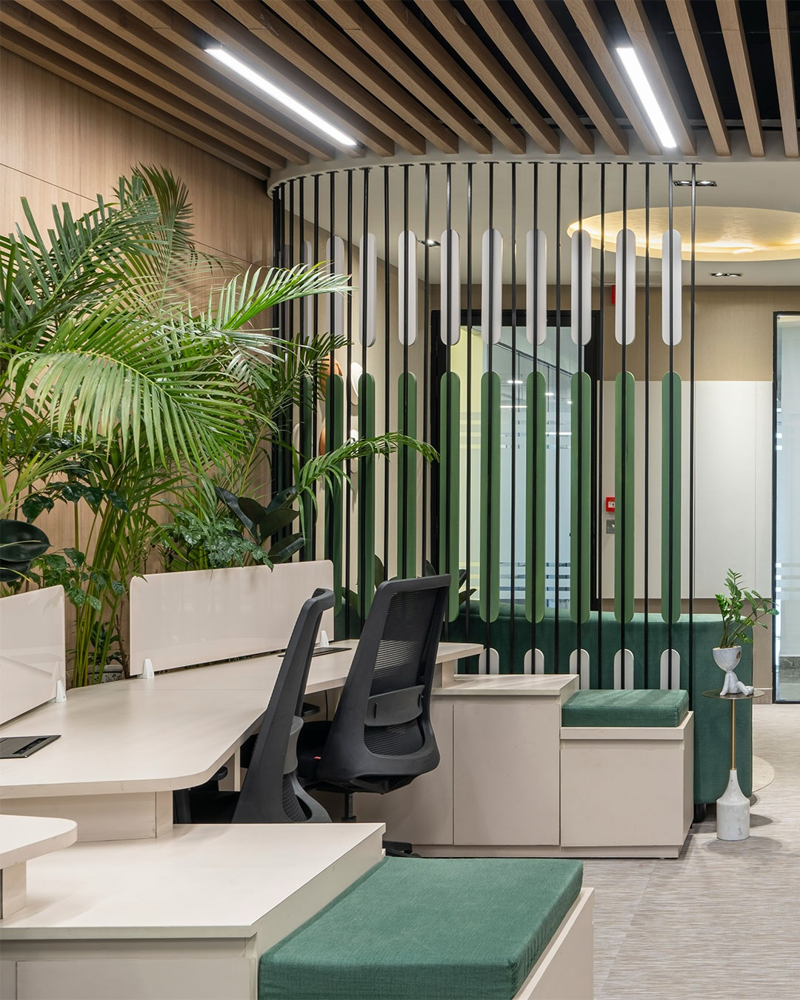
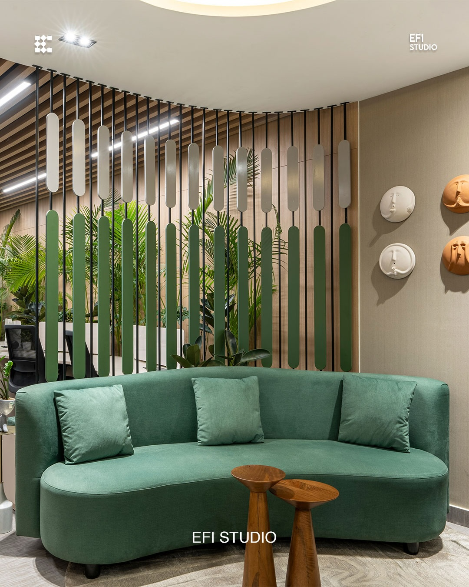
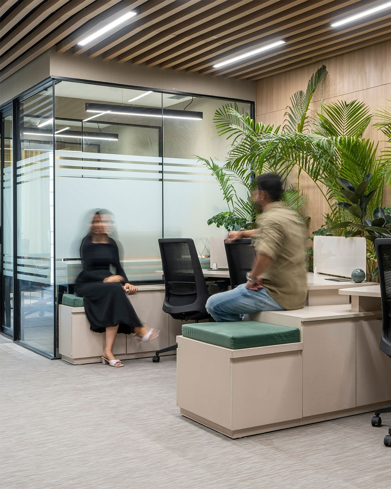
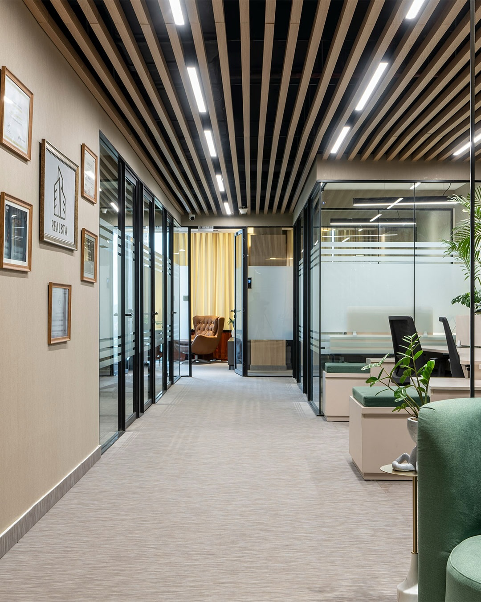

Contemporary workspace

Wood, glass and greenery define this workplace. Integrated seating creates informal places to meet alongside focused workstations. Original photography from EFI’s March 31 Instagram carousel.
Descriptive title; official project name and location are unverified.


